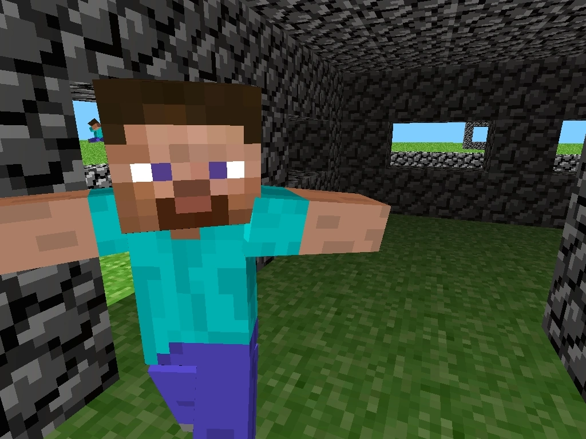
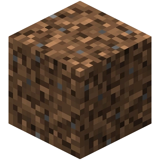
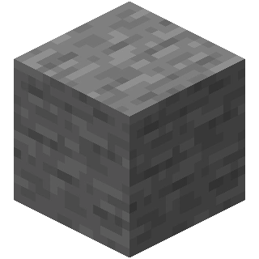
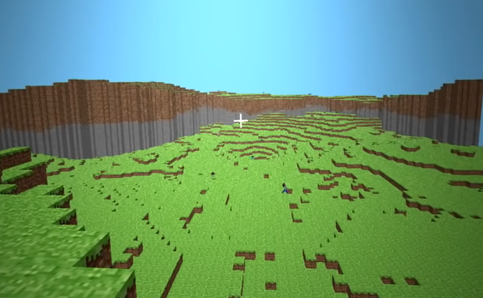
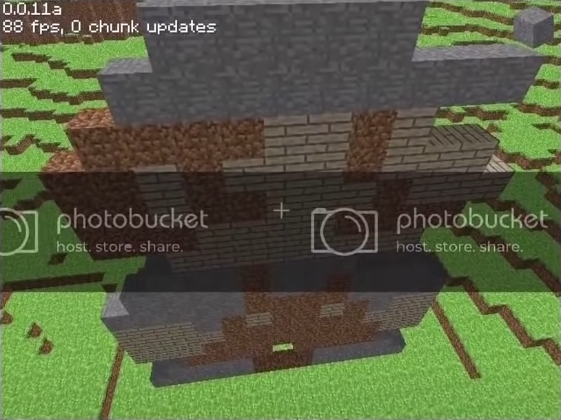

Cave Game
10 мая 2009
Всё ещё мало кому известный программист Маркус Персон публекует
свою очередную разработку - Cave Game.
В той версии игры карта была размером 256x256 блоков и состояла из
булыжника и травы, в глубинах мира можно найти пещеры. Уже есть простая механика света и чанки.

13 мая выходит первое обновление - rd-132211
- Игра стала более стабильной
- Добавлены установка и разрушение блоков
- Генератор мира стал более гладким и менее случайным
Спустя час выходит ещё одно обновление - rd-132328
Главным нововведением стал человек - первый моб в игре. Он спавнился после генерации
мира и рандомно бегал по карте с очень странной анимацией движения. Так же при нажатии
R игрок перемещался в случайную точку.

Cave Game
Minecraft Order of the Stone
Следующая версия не заставила себя долго ждать и вышла почти в полночь
15 мая - rd-20090515
Человека теперь можно призвать нажав кнопку G, а в центре
экрана красуется незаметный на первый взгляд, но важный для игры - крестик.

16 мая 2009
За одни сутки было выпущено целых 11 новых версий! Но обо всём по порядку.
Почти в час ночи по Шведскому времени выходит rd-160052. На тот момент
это самое большое обновление, ибо добавлено 3 новых блока: земля, камень и доски.
Выбирать блоки можно нажатием цифр от 1 до 4. При ломании блока видны частицы.
Земля привращается в траву под действием света. Текстура самой травы изменена -
она стала чуточку ярче.



Игра вновь переименована и теперь называется просто -
Minecraft
Днём Нотч выпускает rd-161348 в которой был добавлен
сажанец, однако дерево пока вырасти не могло. Была изменена текстура досок,
а в файлах игры можно найти текстуры лавы и воды.
Обновление получил генератор мира, теперь в Майнкрафте можно найти скалы,
хотя они и были слишком резкими.

Между 16-17 часами Нотч выпускает 4 новых версии, которые обычно называют
"Minecraft pre-classic alpha".
- rd-161607
- rd-161616
- rd-161625
- rd-161648
Эта линия версий предназначалась для закрытого тестирования и была выслана
лишь нескольким, самым активным игрокам.
Точно сказать, что дабавили в этих версиях сложно, так как все они были утеряны,
а упоминания о них в интернете почти нет. Если верить Minecraft Wiki, ничего кроме
баг-фиксов и технических изменений там не было.
Следующий период в истории называется -
CLASSIC
Его разделяют на 4 этапа:
- Early classic creative
- Multiplayer test
- Survival test
- Late classic creative
Early classic creative
Как понятно из названия, на этом этапе был лишь творческий режим. Первая версия
вышла всё того же 16 мая в 16:52.
Наконец-то названия версий преобрели человеческий вид, она называлась 0.0.1a.
Единственым изменением стал номер версии, который отображался в углу экрана.
За вечер того же дня Нотч выпускает ещё 4 обновления:
- 0.0.2a
- 0.0.3a
- 0.0.4a
- 0.0.9a
В основном в них были добавлены фиксы багов.
На следующий день было выпущено 2 мелких обновления, которые кроме фиксов ошибок
ничего не принесли. Это были - 0.0.10a и 0.0.11a
И\В этот день игру разместили на форуме TigSource, что принесло ей некоторый хайп.
Пользователи оценили её потенциал, начав делиться своими постройками и пиксель артами.

Так же в этот день был создан первый логотип игры, который представлял собой надпись
"Minecraft" из булыжника.

19 мая Нотч делится скриншотом, на котором изображено озеро лавы.
А уже на следующий день выходит версия 0.0.12a. В этой версии были добавлены
все жидкости Майнкрафта - лава и вода. Впервые появился бедрок,
который тогда упоминался как - неразрушаемый камень. Как и сейчас он был расположен в
нижней части карты, а сама карта стала значительно больше. Теперь она пердставляла
собой остров окружённый бесконечным океаном.
Физика воды была весьма странной - она заполняла любое пространство рядом с собой.
Так же в этой версии появилась пауза, а нажатие N сохраняло мир.